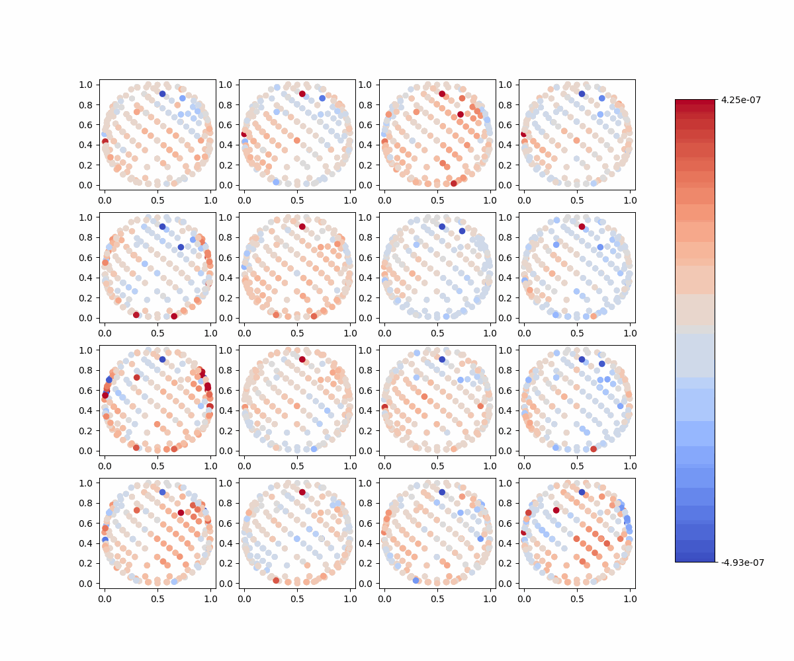

Imagined Speech (left: HbO, right: HbR)
Each panel shows the average of 6 samples (1s) chunks of data from 16 trials of imagined speech. The color represents the average concentration of HbO or HbR across the 6s chunk. The x and y axes represent the channel locations. All plots use the same color scale (max: 95% percentile of all data from the block, min: 5% percentile of all data from the block).

Baseline
Imagined Speech minus baseline